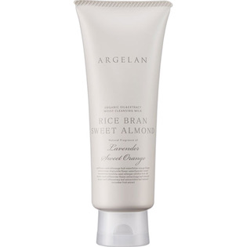

返回列表
产品名称：アルジェラン モイストクレンジングミルク

カラーズ アルジェラン モイストクレンジングミルク １５０ｇ
メーカー カラーズ
JANコード 4571242812431
商品の特徴
ライスブランオイル50％配合の高保湿クレンジング
- 成分・分量
- コメヌカ油・水・ジステアリン酸ポリグリセリル－10・グリセリン・ヒマワリ種子油・アーモンド油・オレンジ油・ラベンダー油・オレンジ果実水・ビターオレンジ花水・クエン酸・ローマカミツレ花水・ラベンダー水・キサンタンガム・マカデミアナッツ油・アルガニアスピノサ核油・オリーブ果実油・ホホバ種子油・トコフェロール・ラベンダー花エキス・ラウリン酸ポリグリセリル-2 ・セージ葉エキス・ステアリン酸グリセリル（ＳＥ）・ブドウ種子油・エタノール・ローズマリー葉エキス・ベンジルアルコール・オリーブ葉エキス・デヒドロ酢酸・キュウリ果実エキス
- 用法及び用量
- ＜使用方法＞
適量（さくらんぼ大）を手に取り、顔の中心から外側に向けてメイクとよく馴染ませた後、ぬるま湯で洗い流してください。